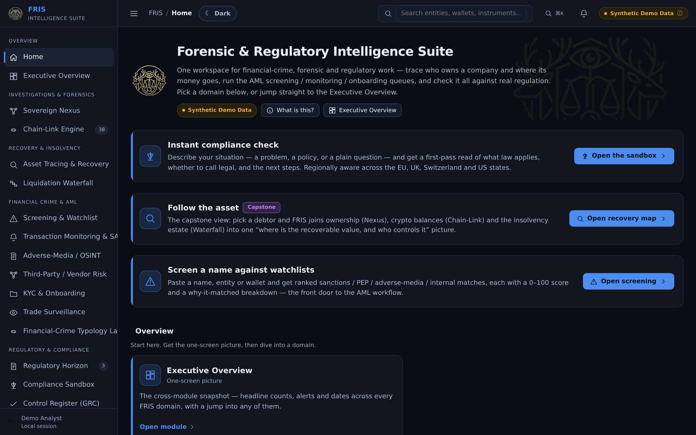
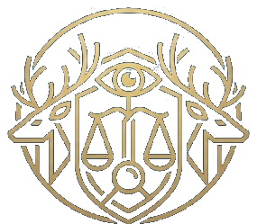
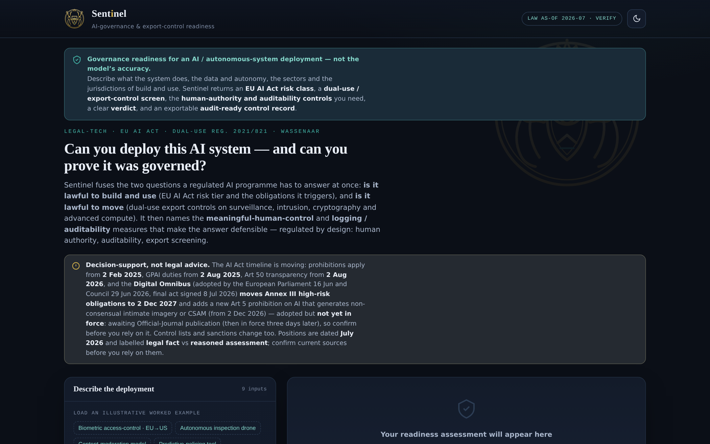

Geneva · Swiss B permit — work-authorised, no sponsorship needed · available now
I take ownership of the problems that cross law, risk, operations and technology — and build the systems that resolve them.
Tailor this page:
Target roles: strategic operator across legal, risk & technology transformation — I own the outcome end to end and build the systems that deliver it.
A strategic operator across legal, risk and technology transformation: I take the exposure end to end — own the legal and regulatory position, redesign the operating model around it, and write the software that makes the control real. Seven working platforms run live on this page — financial-crime forensics, AI-governance and export-control screening, cross-border data transfer, forecasting and delivery — alongside board-level ownership of an eight-site operating model through restructuring, funders and regulators. LL.M. in international law (dissertation 100%), ~6 years owning legal, compliance & operations, Python/SQL, and a Swiss B permit — work-authorised, no sponsorship needed.
Sharpest where the risk is regulatory — sanctions and financial-crime exposure, cross-border data transfer and audit-ready control frameworks — built as an enabler, not a blocker. One CV covers the whole picture; the case studies and publications carry the specialist depth behind it.
+ £500k+ competitive bids authored — ESF, Lottery & government
7 platforms
Working legal-tech & analytics systems built
−30% operating cost — paper-to-cloud in under 3 months
£70k+ tribunal exposure mitigated — early settlement strategy
<15 min audit retrieval · <1% funding exceptions
$2M+ solar JV — white paper, deck & financing
Portfolio — live regulatory tooling
Seven platforms I designed and built
For a RegTech or legal-engineering team, this is the part of the portfolio that carries the weight: working tools where I own both the regulatory reasoning and the code that runs it — FRIS, Frontier, Sentinel and the Sanctions Suite are the compliance-tech proof; Meridian, Vantage and Helm extend the range. Each opens right here in the page — click a card to launch it, read a short “How it’s built” note, or pop it out to a new tab.
Architected and built by me — AI-assisted, never AI-designed; the analysis engines, data models and interfaces are mine. All seven run client-side — everything (including a locally-vendored React where it is used) computes entirely in your browser, so no subject data ever leaves the page. All data is synthetic or a dated, frozen local dataset.
Flagship · Forensic intelligence▶ Live demo


FRIS Forensic & Regulatory Intelligence Suite
A forensic workbench for financial-crime investigations — 23 analysis engines spanning beneficial-ownership tracing, sanctions & adverse-media screening, crypto peel-chain tracing and an insolvency-recovery waterfall. ~20,000 lines of JavaScript, authored by me.
Sanctions Suite Screening, exposure, vessels, portfolio
Four tools on one dated, checksummed OpenSanctions snapshot — 308,597 designated entities, 12,113 ownership and association records, 2,347 vessels and aircraft. Screen a name or a manifest, trace a counterparty's route to a designated party, and produce a dated attestation with source checksums. No API, no subscription, no data leaving the page.
A market tracker that flags the regulatory changes most likely to hit a company — matching new rules, amendments and sanctions moves to each issuer's actual business and pipelines, then showing whether the exposure could move the share price, and why. Provenance-first: every figure carries its own source and as-of date, and gaps are shown, never invented.
A multi-industry demand-forecasting sandbox — brewery, DTC, education, manufacturing and SaaS — with a dependency-free engine (Holt-Winters, ETS, Croston, OLS) back-tested on rolling origins and planned over operationally sensible weekly or monthly horizons. Load a worked scenario or bring your own numbers.
A project-management platform that turns a written brief into a live schedule — dependency graphs, capacity and critical-path planning, editable tasks you can split, reorder and re-scope, blocker tracking, and a multi-project portfolio view. Log a delay and every view re-plans around it.
Determines the lawful basis for moving personal data across a border — EU GDPR Chapter V, the Swiss FADP and UK GDPR — runs a Schrems II-style Transfer Impact Assessment on the destination, lists the supplementary safeguards you need, and exports an audit-ready record. Handles electronic and physical transfers alike; positions are labelled legal-fact vs assessment and dated, with a “verify current lists” caveat.
GDPR Ch. V · FADP · UKSchrems II TIAAdequacy · SCCs · derogationsOffline
Legal-tech · AI governance & export control▶ Live demo

Sentinel AI-governance & export-control readiness
Describe an AI / autonomous-system deployment; Sentinel returns its EU AI Act risk class (prohibited / high-risk / limited / minimal) with the obligations triggered, a dual-use export screen — EU Reg. 2021/821 cyber-surveillance catch-all, Wassenaar Cat 3/4/5, with an honest US ITAR/EAR flag — the meaningful-human-control and auditability controls needed, a clear verdict, and an audit-ready control record. Positions are dated and labelled legal-fact vs assessment.
EU AI Act · Annex IIIDual-use 2021/821 · WassenaarHuman control · loggingOffline
Morris Anderson Construction Website · estimator · client portal
A production system built end-to-end for a UK construction firm — public site, a ten-step range-based build-cost estimator with confidence bands and server-side PDF export, and a client portal for milestones, client decisions and change control with a running approved-cost total. Confirmed-facts-only content governance: unverified claims stay unpublished by rule.
New tabClient build · design & estimator preview with demo data
Professional experience
Board-level leadership, hands-on delivery
Legal, Compliance & Technology Consultant
Keystone Analytics — multinational app / data / AI (US parent & Philippine fintech arm)
2022 – Present · advisory (project-based)
Advise on legal, compliance, financial and strategic matters while shaping data and risk logic, compliance frameworks and governance — contributing proprietary tooling and IP, including scraping and analyst tooling carried over from my Victory Finance quantitative work.
Design and oversee agentic-LLM workflows with human-in-the-loop over REST/JSON and webhooks; hands-on exposure to OneTrust, ServiceNow GRC, TrustArc and NAVEX — under controls aligned to the group’s governing regimes (US federal & Texas money-services; Philippine BSP, AMLA and Data Privacy Act), with FINMA-aligned controls (readiness) and EU DORA awareness.
Supported a $2M+ solar initiative (public–private JV) — authored the white paper and investor deck and restructured the financing — and shaped the compliance and rollout framework for AidNow, a verified emergency-services directory app (Philippines).
Conceived DipRadar — a personal-research equity screener that scans the S&P 500 for discounts to analyst price targets and ranks the candidates by a composite signal score, with watchlists and diff-based alerts. I brought the concept, market intelligence and initial IP (from my Victory Finance quantitative work); it was built and delivered by Keystone Analytics, and we share the IP in the delivered app. It ships an explicit “not financial advice” disclaimer, with signal definitions credited to publicly available Pristine Capital / Andrew O’Connell educational material.
Director · Head of Legal, Compliance & Operations
Red Spark Learning C.I.C. — eight-site UK adult-education social enterprise
2015 – Aug 2024 · Statutory director from Jul 2021, through wind-down (dissolved 2025)
Central to the organisation from 2015; formally appointed Director in July 2021. Owned legal, compliance and operations at board level across eight sites — the largest independent adult-learning provider across the three counties it served, outside the colleges and universities. Built and led the team through a compliant restructuring to a 100% audit pass, with no adverse findings.
Ran early-stage dispute resolution and settlement strategy on vendor and employment matters — resolving them before tribunal or formal proceedings.
Ran contract lifecycle management end-to-end through CLM and e-signature systems, and delivered the full GDPR programme (DPIAs, DSARs, RoPA, retention).
Built Python regulatory-monitoring pipelines that flag policy changes and trigger tasks, approvals and records — feeding risk registers, dashboards and board-level reporting with cross-site trend analysis.
Delivered a paper-to-cloud implementation in under three months (−30% operating cost, full continuity); secured £200,000 ESF / Lottery funding and authored £500k+ in competitive bids.
Built a Python quantitative trading and risk stack around a policy-to-market signal: legislative, regulatory and geopolitical feeds consolidated into one pipeline (Pandas, REST/JSON APIs) with event-driven logic that measured how comparable policy developments had historically moved prices, weighed alongside company fundamentals and the conventionally analysed factors. The same regulatory-monitoring discipline as the pipelines I built at Red Spark — with a market price attached as the test of whether the signal was real. Board-level risk reporting throughout; a personal proprietary vehicle, closed in an orderly, compliant wind-down.
Over the life of the strategy (Feb 2021 – Dec 2025): ≈25% a year, time-weighted, at a 69% win rate and a profit factor of 2.2 across 222 self-directed closed positions. Full broker statement available on request. Personal capital; not financial advice.
Board Member / Trustee
HVOSS (Herefordshire Voluntary Organisations Support Service) — VCSE-support charity
Oct 2022 – Jul 2024
Independent non-executive governance, legal and financial oversight for a charitable company supporting the county's voluntary and community sector — restricted-funds stewardship, cashflow-first resilience decisions and defensible governance through a period of funding volatility — including redundancy and employment matters where early, evidence-led settlement mitigated £70k+ in potential exposure. My one external board seat, held alongside the executive roles above.
War Room — governance, finance & crisis operations
The documents I produce under pressure
Deep-dive case analyses — governance-led operational pivots, deficit recovery, and regulator- and audit-ready crisis response.
Illustrative documents on synthetic data. These are constructed case studies built to show the form and rigour of what I deliver under operational hardship — pandemic continuity, director incapacitation, regulatory pressure. They are not redacted real matters: no former employer's, client's or funder's confidential information appears here.
Scenario · cross-border capital raise
Keystone Advisory Report
Converts an early-stage solar pitch deck into an institutional advisory report — navigating cross-border regulation (FDI restrictions, FCPA / PEP controls) and modelling capital-stack structuring to open non-dilutive funding pipelines.
View case study
Scenario · pandemic continuity
Red Spark Operational Architecture
A critical-infrastructure pivot under COVID-19 pressure: an eight-site, paper-based operation converted to a compliance-led digital model — an automated legal pipeline delivering <1% funding exceptions, <15-minute audit retrieval and no known reportable data breaches.
View case study
Scenario · deficit & director illness
Crisis Governance Playbook
A simulated board-grade crisis response: legal mapping, insolvency decision triggers, 13-week cash controls, restricted-funds protection, options appraisal, creditor / standstill strategy, stakeholder comms and governance reform — following a £450k deficit shock in a £3.2m-turnover charity.
Agentic-LLM workflows (HITL)Claude CodeGenAI control mappingCompliance-audit prompting
Data, BI & delivery
Power BIExcel (advanced)Jira · ConfluenceMicrosoft 365Adobe Photoshop
Domain & controls
FINMA-aligned controls (readiness)EU DORA awarenessEU AI Act (provider/deployer roles)UK Data (Use and Access) Act 2025Swiss FADP / nFADP (awareness)Swiss AMLA / Transparency Register (readiness — 1 Oct 2026)DPIA / LIARegulatory-obligation tracking
Additional familiarity (read / edit / adapt, not production development): R, Java, C#.
Implementation ownership
Confident to own an intake build and CLM rollout end-to-end — templates, intake logic, approval workflows and permissions, playbooks, fallback language and clause libraries — with self-service contracting, legal-review gates and full post-signature auditability, wired over REST/JSON and webhooks into executive dashboards for matter volumes, SLA performance, privacy-risk trends and compliance readiness. I have scoped exactly this kind of rollout: a Streamline intake build and a Juro CLM rollout, with Catylex clause enrichment across ServiceNow, OneTrust and Close. Governing it was a multi-jurisdiction privacy matrix — EU, UK, US, Australia and New Zealand, with EU AI Act role analysis — that maps every data flow to its controlling regime before a record moves. The same regime-by-regime structure extends to the Swiss FADP (nFADP), with its Swiss-specific divergences, for a Geneva deployment.
Confidentiality, AI & jurisdictions
All portfolio data here is synthetic or public. In client work I operate on least privilege, keep privileged material out of third-party models unless contractually cleared, and gate every automated workflow behind human review — legal professional privilege and data-protection duties sit above delivery speed.
Jurisdictions worked across: England & Wales (Solicitor — admission January 2027; not yet admitted) · Switzerland · EU
For the record: not a litigator, and not a production software engineer — a legal & operations leader who builds working tools to a professional standard, and knows exactly where that line sits.
Education, qualifications & writing
Credentials
Education
2022 – 2024
LL.M. Legal Practice — International Law University of Worcester. Dissertation: “Economic Warfare: The Unregulated War” — awarded 100%. It proposes a legislative framework (UK-EWPRA) against cyber-economic aggression, market manipulation and proxy financial tactics, and led to an invitation to pursue doctoral research.
2016 – 2020
B.A. (Hons) Politics, Philosophy & Economics — Economics major (2:1) Goldsmiths, University of London. Focus areas: Macroeconomics, International Economics, Banking, Political Theory, African Conflict & Peacekeeping, Game Theory. Model UN & debate; university radio commentator on macro-policy.
Qualification & membership
Solicitor route
Solicitor (England & Wales) — admission January 2027. Qualifying via the SRA Solicitors Qualifying Examination (SQE) route — not yet admitted; ~6 years in legal & compliance with 5+ years SRA-qualifying work experience.
Member
International Law Association
In progress
Completing French to B2 (2026); CAMS to follow — formalising AML and sanctions capability for Swiss / European roles.
Languages
English (native) · French (B2 — completing 2026) · Spanish (basic)
Research
My research sits where international law, economic security and computational method meet. My LL.M. dissertation, “Economic Warfare: The Unregulated War” (awarded 100%), argues that economic warfare — cyber-economic aggression, financial terrorism and the strategic manipulation of markets — has become a favoured mode of conflict for state and non-state actors alike, increasingly waged through third-party proxies that evade legal accountability. It shows why instruments such as the Sanctions and Anti-Money Laundering Act 2018 and the Magnitsky Act, though significant, are too narrow and too slow, and proposes the UK Economic Warfare Prevention and Response Act (UK-EWPRA): a deliberately adaptable legislative architecture — UK-anchored but globally extensible — designed to keep pace with algorithmic and cyber warfare.
Doctoral direction (in development). Following the dissertation I was invited to pursue doctoral research (economic & cyber warfare), and am developing my own project on the regulation of AI — building on my work on AI as an autonomous third-party actor — written in Geneva alongside professional work. It is the next step beyond the private military companies and proxies of my dissertation: systems that can act, and cause harm, at arm's length from any accountable principal. My argument is that the answer is not only reinterpreting existing international law, but small, modular internal policies that many states can adopt quickly — in the spirit of the Magnitsky Act — so regulation moves at the speed of the technology it governs.
Research interests
AI accountability & autonomous actorsEconomic & cyber warfare and the lawAdaptive / modular regulationSanctions & proxy-financeLegal-tech & computational complianceAML & privacy governance
A single CV, deliberately — the depth sits in the case studies and publications rather than in a longer document. Reference letters below; further references on request.
Get in touch
Contact
Geneva, Switzerland Swiss B permit — work-authorised, no sponsorship needed
Open to legal, risk and technology-transformation roles in Geneva — legal operations and regulatory change, enterprise risk, controls and resilience, operating-model design and AI governance — and equally to the specialist lanes this portfolio evidences: RegTech / legal engineering and sanctions / financial crime, where owning both the regulatory outcome and the build is the advantage. On the counsel track, Solicitor (England & Wales) — admission January 2027 (qualifying; not yet admitted).